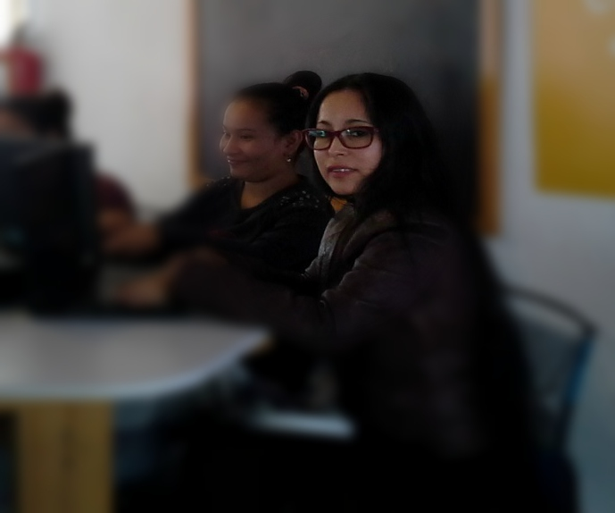

<section id="about" class="success">
  <div class="container">
    <h2>Sobre mi</h2>
    <hr class="star-light"/>
    <div class="row">
      <div class="comentario col-sm-5"></div>
      <div class="comentario col-sm-7">
        <p></p>Estudio ingeniería de software y desarrollo de páginas web, tengo un firme propósito de seguir aprendiendo sobre los diferentes lenguajes de programación y construir una carrera en el área de programación y mantenimiento de software.
        <p></p>Cuento con 10 años de experiencia como docente en matemática e informática, los cuales me han permitido desarrollar un gran sentido de responsabilidad, así como habilidades de manejo de grupo y liderazgo de proyectos educativos.
        <p></p>Soy de aquellas personas que disfruta del lenguaje de programación, cuando no programo, me dedico a armar rompecabezas, a dibujar y disfrutar de la lectura de un buen libro.
      </div>
    </div>
  </div>
</section>